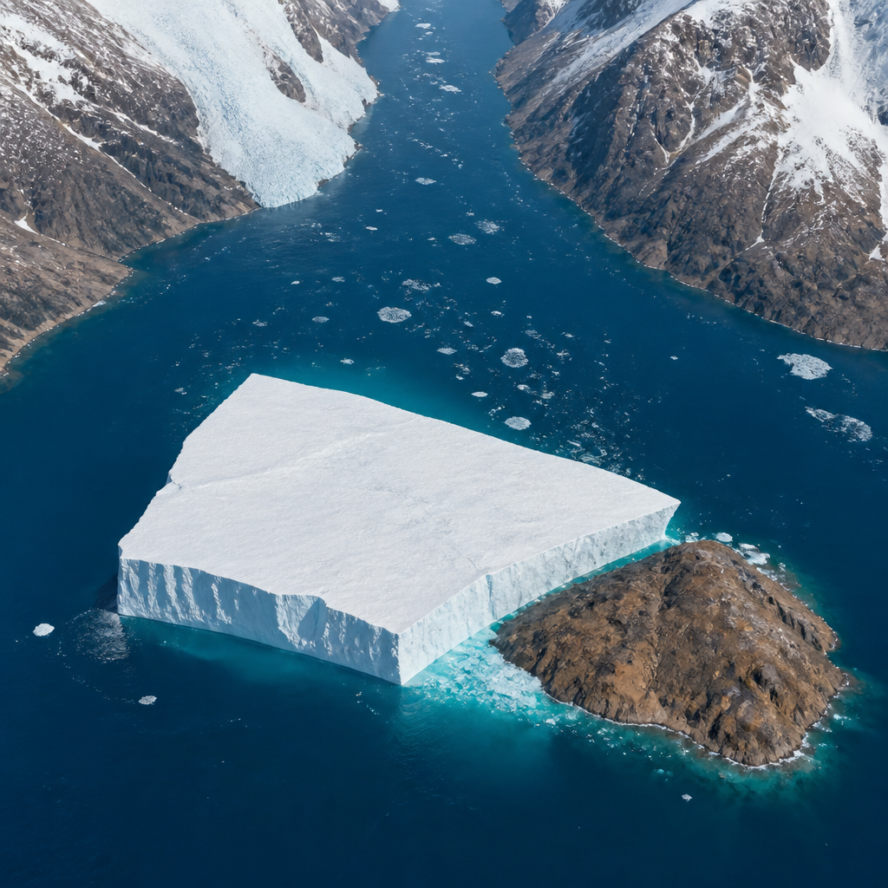
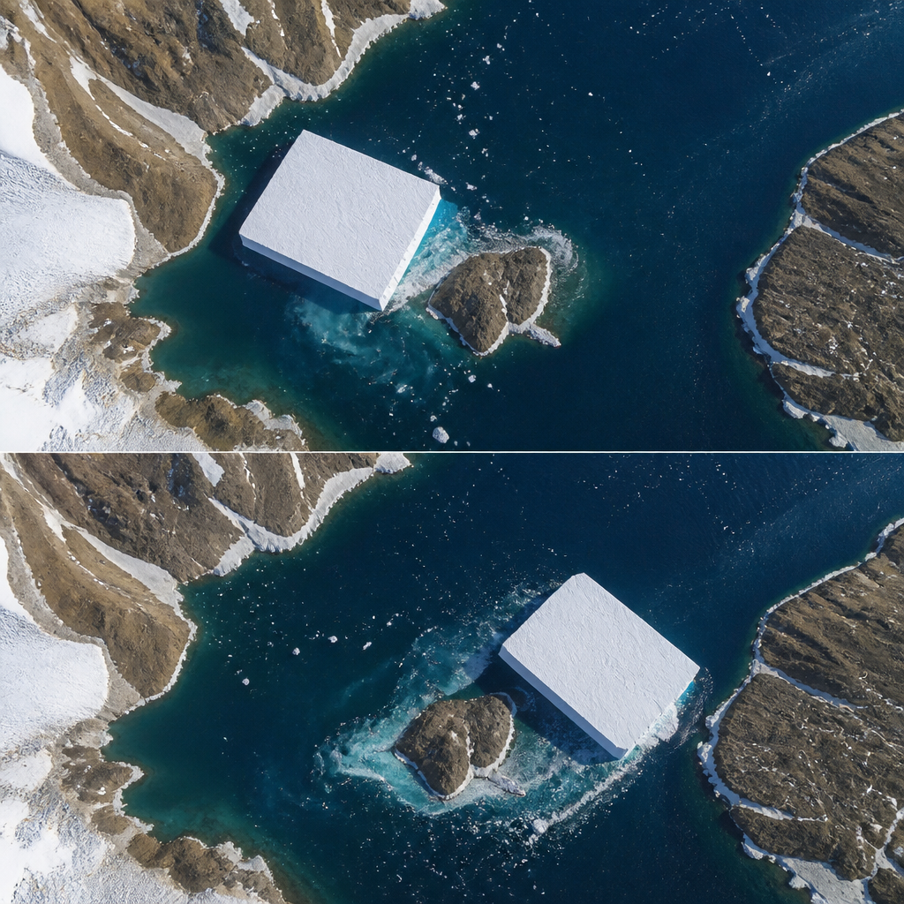

Dopo essersi staccato dal ghiacciaio, il grande iceberg ha urtato un isolotto roccioso e ha proseguito nello stretto di Nares.
Nell’estate del 2026, un grande iceberg staccatosi dal ghiacciaio Petermann, nella Groenlandia nordoccidentale, ha lasciato rapidamente il suo fiordo di origine. Durante il percorso verso lo stretto di Nares ha incontrato Joe Island, un piccolo affioramento roccioso posto proprio alla foce del fiordo. L’urto non ne ha provocato un’immediata frammentazione: le immagini satellitari mostrano invece l’isola di ghiaccio mentre ruota, si allontana dall’isolotto e continua la deriva verso sud-ovest.
L’episodio è stato osservato dallo strumento OLI, l’Imager Operativo della Terra, a bordo del satellite Landsat 9. Le immagini di due giorni consecutivi mostrano due momenti della stessa manovra naturale: prima il grande blocco di ghiaccio alla confluenza fra il fiordo Petermann e lo stretto di Nares, poi l’iceberg incastrato contro la piccola isola bruna. La successiva posizione indica che vento e correnti superficiali lo hanno spinto fuori dal fiordo.
Il distacco di iceberg, chiamato calving, è una fase normale del ciclo di vita di un ghiacciaio che termina in mare. Gli scienziati seguono però questo processo insieme a molte altre osservazioni del ghiaccio e dell’ambiente circostante, perché nel lungo periodo può fornire segnali di instabilità. Il Petermann è fra i maggiori ghiacciai della Groenlandia che raggiungono il mare e regola il passaggio del ghiaccio dalla calotta glaciale all’oceano. Per questo la sua stabilità futura ha conseguenze anche per l’innalzamento del livello del mare.
Il nuovo iceberg è stato individuato all’inizio di agosto in immagini della missione Sentinel-1 dell’Agenzia Spaziale Europea. Al momento del distacco misurava poco più di 76 chilometri quadrati, una dimensione paragonabile a quella dell’isola di Saint Thomas, nelle Isole Vergini statunitensi. Era il maggiore distacco osservato in un ghiacciaio artico dal 2020 e il più grande dal Petermann dall’isola di ghiaccio del 2012.
Si tratta di un iceberg tabulare, cioè un blocco con una superficie ampia e relativamente piatta, chiamato anche isola di ghiaccio. Il distacco non è avvenuto lungo una delle grandi fratture che i ricercatori stavano monitorando sulla lingua glaciale, la parte del ghiacciaio che si estende e galleggia sull’acqua. Ha seguito invece una frattura diversa, dando origine a un’isola di ghiaccio più piccola di quanto previsto. Alla fine di agosto restavano due grandi fratture, che potrebbero in futuro produrre altre isole di ghiaccio, ma senza una data nota.

Joe Island è uno dei primi ostacoli che un’isola di ghiaccio in uscita dal fiordo Petermann deve affrontare. Le collisioni con questo isolotto spesso segnano l’inizio della disgregazione di un iceberg: nel 2010, per esempio, l’impatto divise in due l’isola di ghiaccio allora proveniente dal Petermann. Questa volta, invece, il blocco ha resistito al contatto senza ulteriori rotture visibili.
Gli iceberg del Petermann tendono a essere più sottili e fragili di quelli prodotti da altri ghiacciai groenlandesi, come Jakobshavn e Helheim, e sono ancora più sottili dei giganteschi iceberg dell’Antartide. Al momento del distacco, il nuovo iceberg aveva uno spessore stimato inferiore a 150 metri. Questa caratteristica aiuta a capire perché il passaggio accanto a Joe Island sia stato seguito con particolare attenzione.
Nella settimana successiva al distacco, l’iceberg ha percorso in media 3 chilometri al giorno lungo il fiordo Petermann. Ora il suo viaggio prosegue nello stretto di Nares. Col tempo, maree, venti, correnti e fusione continueranno a indebolire il ghiaccio, che si romperà in frammenti più piccoli. Il superamento dell’urto non significa dunque che l’isola di ghiaccio resterà integra: descrive soltanto una fase della sua evoluzione.
Il grande iceberg del Petermann ha urtato Joe Island senza rompersi ulteriormente. Le immagini di Landsat 9 lo mostrano mentre ruota fuori dal fiordo e prosegue nello stretto di Nares. Durante la deriva, vento, correnti, maree e fusione ne favoriranno la progressiva frammentazione.
Gli iceberg più spessi, formati da ghiacciai che arrivano alla marea senza estensioni galleggianti di piattaforma glaciale, possono trascinare sul fondale o fermarsi sul fondo già dentro il fiordo. Le isole di ghiaccio del Petermann possono invece incagliarsi più tardi durante il viaggio. Molte sono rimaste bloccate al largo delle coste delle isole di Coburg e Baffin.
Le isole di ghiaccio e i loro frammenti possono viaggiare per distanze considerevoli. Mentre si sciolgono, distribuiscono acqua dolce nell’oceano; allo stesso tempo possono costituire un possibile pericolo per le attività marine e per le infrastrutture. Per seguire questa fase della loro vita, le immagini satellitari restano uno strumento essenziale: permettono di osservare il percorso, gli urti e la frammentazione di masse di ghiaccio che si muovono in aree remote.
Questo articolo l'hai letto sul blog di Meteo Radar: un'app che ti mostra da dove vengono i numeri, invece di limitarsi a dartelo. E ogni mattina ne trovi uno nuovo come questo.